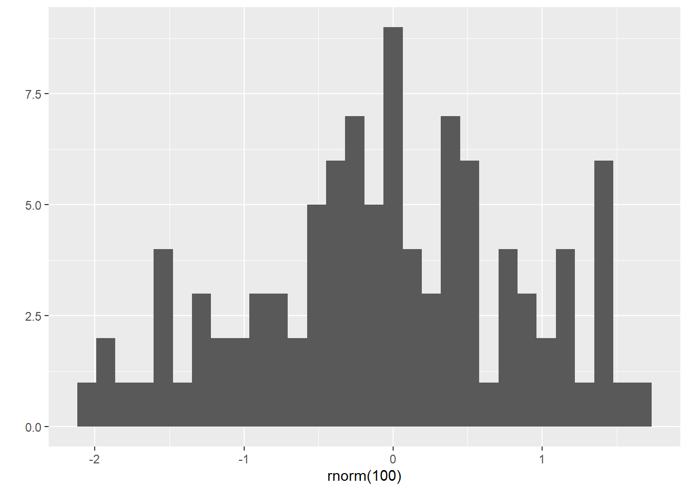

Chapter 7 Advanced R
7.1 Introduction
By now you have mastered the fundamentals of base R, visualizations, and data science!
In this tutorial, we will cover some a few of the more advanced but extremely useful topics.
7.2 Getting Started
Before beginning this tutorial, make sure you have installed these packages:
install.packages('rmarkdown')
install.packages('dplyr')
install.packages('knitr')7.3 R Markdown
R Markdown is a powerful format for quickly making high-quality reports of your analysis. You can embed code and all kinds of output, including graphs, and output them to a Word Document, PDF or website. In fact, all of our tutorial webpages are written in R Markdown, including this one!
Here we’ll cover just the basics, but a complete guide to R Markdown is available online from Yihui Xie, J. J. Allaire and Garrett Grolemund. You can also check out the R Markdown documents that we use to make our tutorial websites on our GitHub Pages (the website files have .html extension and the R Markdown files have the same name with .Rmd extensions):
7.3.1 Cheat Sheet
There is a very handy 2-page ‘cheat sheet’ that you can print out to help you remember some of the main commands. I use R Markdown for all kinds of documents – including course tutorials like this one – so I have the 2-page cheat sheet printed out and taped to my wall next to my computer.
You can also access cheat sheets for R Markdown and several others R Studio also includes a number of cheat sheets under the Help menu: Help -> Cheatsheets
7.3.2 Create
In RStudio: File-> New-> R Markdown
Choose Document from the left-hand side menu
Make sure html is selected
Then click OK
Very few elements are needed for a basic markdown file, and these are provided when you create a new file.
7.3.3 YAML Header
This is generated automatically when you make a new .Rmd file in RStudio. Depending on what options you choose, it might look something like this:
---
title: "Untitled"
author: "Robert I. Colautti"
date: "January 20, 2019"
output: html_document
---There are other options available for YAML, and you can includes a separate _output.yml to set other aspects of the layoug.
7.3.4 Markdown
R Markdown is based on the markdown language, which was created as a quick and easy way to encode formatted websites in a simple text document.
R Markdown has a few additions, including the ability to easily incorporate R code, graphs, and equations.
7.3.5 Basic elements:
7.3.5.1 Plain text
Plain text is converted into paragraph format.
To start a new paragraph, press enter twice, so to skip a line in the .Rmd file.
7.3.5.2 Formatted text
You can format text with * or _
*italics* or _italics_: italics
**bold** or __bold__: bold
Use greater-than sign for block quotes, eg. > TIP: quote
TIP: quote
7.3.6 Headers
Add headers with up to 6x # – more headers = subheadings:
# Header 1
## Sub-Header = Header 2
### Sub-Sub Header = Header 3
#### Sub-Sub-Sub Header = Header 4
7.3.7 Other Elements
superscript^2 superscript^2
-- for short–dash: –
--- for long — dash: —
7.3.8 Links
Links have a special format. The text you want the user to see goes in square brackets, followed immediately by the file or html link in regular brackets, with no space in between:
[Colautti Lab Website](https://colauttilab.github.io/):
You can also use this to link a file in the same project folder:
[Linked jpeg file](./ColauttiLabLogo.png):
{kind=link}
7.3.9 Images
Or you can embed the image directly by adding an exclamation point. You can leave the linked text blank or keep it to use as a caption.
:
Linked jpeg file
7.3.10 Lists and tables
Lists are easy to create, simply start a line with * or + for unordered lists or a number for ordered lists. Add tab characters for sub-lists:
+ Unordered list item 1
* Item 2
+ sub item 2.1
* sub item 2.2
* Item 3 - Unordered list item 1
- Item 2
- sub item 2.1
- sub item 2.2
- Item 3
1. Ordered list item 1
2. Item 2
+ sub item 2.1
* sub item 2.2
3. Item 3 - Ordered list item 1
- Item 2
- sub item 2.1
- sub item 2.2
- sub item 2.1
- Item 3
The fun thing about ordered lists is the numbers you use don’t really matter – R Markdown will automatically start at 1 and increase for each item.
1. Ordered list item 1
1. Item 2
+ sub item 2.1
* sub item 2.2
1. Item 3 - Ordered list item 1
- Item 2
- sub item 2.1
- sub item 2.2
- sub item 2.1
- Item 3
Tables are added using vertical pipe | to denote columns, and a line of horizontal dashes to separate the title of the table, and dashes with pipes to separate the header row from the rest of the table. For example, this code:
Tables
-----------------------
Date | Length | Width
------|---------|------
09/09/09 | 14 | 27
10/09/09 | 15 | 29
11/09/09 | 16 | 31Produces this output:
7.4 Tables
| Date | Length | Width |
|---|---|---|
| 09/09/09 | 14 | 27 |
| 10/09/09 | 15 | 29 |
| 11/09/09 | 16 | 31 |
7.4.1 Embed R Code
Embed R code inline using the back-tick ` character: embedded code
Note that the back-tick is not the single quotation mark. It’s often on the same key as ~ on North American keyboards.
You can add larger blocks of code (multiple lines) using three back ticks ` and r in curly brackets. Then add three more tick marks after the code chunk:
# ```{r}
# <<your code goes here>>
# ```Ctl-Alt-i is a nice shortcut in R Studio for adding code chunks quickly
7.4.1.1 Code Chunk Names
You can name your code chunks, which becomes useful when making custom packages or other knitr uses. The name is added after the r separated only by spaces. The name cannot contain spaces. E.g. ```{r code-chunk-name, eval=F}
7.4.1.2 Suppress code
You can use different options for your R code chunks, as shown on the cheatsheet. Three main ones are:
eval=F– show the code but don’t run it.include=F– run the code but don’t show it and and don’t produce any output, plots, messages or warnings.echo=F– don’t show the code but run it and include any output, plots, messages and warnings.
7.4.2 Dynamic tables
Making tables from data is a bit more complicated. For example, if we wanted to summarize the FallopiaData.csv data, we could read in the file and then summarize with dplyr as we did in the Data Science Tutorial:
library(dplyr)
Fallo<-read.csv("https://colauttilab.github.io/RCrashCourse/FallopiaData.csv")
SumTable<-Fallo %>%
group_by(Taxon,Scenario,Nutrients) %>%
summarize(Mean=mean(Total), SD=sd(Total)) %>%
arrange(desc(Mean))
print(SumTable)## # A tibble: 10 x 5
## # Groups: Taxon, Scenario [10]
## Taxon Scenario Nutrients Mean SD
## <chr> <chr> <chr> <dbl> <dbl>
## 1 bohem high high 60.3 8.68
## 2 japon gradual high 59.7 9.57
## 3 bohem fluctuations high 58.4 9.20
## 4 bohem extreme high 58.3 7.34
## 5 bohem gradual high 57.5 9.34
## 6 japon extreme high 57.2 10.9
## 7 japon high high 56.4 8.20
## 8 japon fluctuations high 56.4 13.7
## 9 japon low low 52.0 8.29
## 10 bohem low low 48.0 8.86The output is legible but not very attractive for a final report. To make it look better, we can use the kable function from the knitr package:
library(knitr)
kable(SumTable, caption = "Summary Table")| Taxon | Scenario | Nutrients | Mean | SD |
|---|---|---|---|---|
| bohem | high | high | 60.28091 | 8.677075 |
| japon | gradual | high | 59.72917 | 9.565376 |
| bohem | fluctuations | high | 58.36455 | 9.202334 |
| bohem | extreme | high | 58.30917 | 7.337015 |
| bohem | gradual | high | 57.46154 | 9.338311 |
| japon | extreme | high | 57.23643 | 10.903133 |
| japon | high | high | 56.44833 | 8.204091 |
| japon | fluctuations | high | 56.43692 | 13.724906 |
| japon | low | low | 52.02917 | 8.287938 |
| bohem | low | low | 47.98077 | 8.862164 |
7.4.3 Embed Graphs
Use R code to embed graphs.
qplot(rnorm(100))
7.4.4 Options for header
output:
html_document: # Add options for html output
toc: true # Add table of contents (TOC)
number_sections: true # Add section numbers
toc_float: # Have TOC floating at the side, rather than at the beginning
collapsed: false # Expand subsections7.4.5 Content as tabs
## Quarterly Results {.tabset}
### By Product
(Product tab content)
### By Region
(Region tab content)Looks like this:
7.4.6 Quarterly Results
7.4.6.1 By Product
(Product tab content)
7.4.6.2 By Region
(Region tab content)
7.4.7 Equations
Insert equations using LaTeX. Here is a handy cheat sheet
Use single dollar signs for in-line equations, like $Y ~ X$, which will print as \(Y ~ X\)
Use double dollar signs on a new line for full-line equations, for example:
$$\idotsint_V \mu(u_1,\dots,u_k) \,du_1 \dots du_k$$ will produce:
\[\idotsint_V \mu(u_1,\dots,u_k) \,du_1 \dots du_k\]
and
$$sum_{n=1}^{\infty} 2^{-n} = 1$$will produce:
\[\sum_{n=1}^{\infty} 2^{-n} = 1\]
Notice the use of special characters with the backslash \, along with subscripts _ and superscripts _ with the super/subscripted text in curly brackets {}
7.5 Custom Functions
7.5.1 General form:
functionName<-function(var1=Default1,var2=Default2){
## Meat and potatoes script
}7.5.2 Example function
User inputs two objects; the function outputs a list of functions applied to the inputs
my.function<-function(var1=0,var2=0){
# You can make new variables within a function
add<-var1+var2
subt<-var1-var2
mult<-var1*var2
div<-var1/var2
outlist<-list(input1=var1,input2=var2,addition=add,subtraction=subt,multiplication=mult,division=div)
# So far, everything is contained within the function.
# Use return() to generate output
return(outlist)
}Note: Nothing output when the funciton is run. This just loads the function into memory.
7.5.2.1 Run the function
my.function(var1=10,var2=0.1)## $input1
## [1] 10
##
## $input2
## [1] 0.1
##
## $addition
## [1] 10.1
##
## $subtraction
## [1] 9.9
##
## $multiplication
## [1] 1
##
## $division
## [1] 100my.function(var1=c(1:10),var2=c(10:1))## $input1
## [1] 1 2 3 4 5 6 7 8 9 10
##
## $input2
## [1] 10 9 8 7 6 5 4 3 2 1
##
## $addition
## [1] 11 11 11 11 11 11 11 11 11 11
##
## $subtraction
## [1] -9 -7 -5 -3 -1 1 3 5 7 9
##
## $multiplication
## [1] 10 18 24 28 30 30 28 24 18 10
##
## $division
## [1] 0.1000000 0.2222222 0.3750000 0.5714286 0.8333333 1.2000000
## [7] 1.7500000 2.6666667 4.5000000 10.0000000Protip #1:
Consider annotating long or complex script with cat() to help with troubleshooting. The cat function is similar to print but lets you print directly to screen rather than passing through a data object. Note that \n is a ’new line` character; try removing them and compare the output.
my.function<-function(var1=0,var2=0,verbose=FALSE){
cat("\nInput variables:\nvar1 =",var1,"\nvar2 =",var2,"\n")
cat("\nCalculating functions...\n")
cat("\nAdding...\n")
add<-var1+var2
cat("\nSubtracting...\n")
subt<-var1-var2
cat("\nMultiplying...\n")
mult<-var1*var2
cat("\nDividing...\n")
div<-var1/var2
cat("\nGenerating output...\n\n")
outlist<-list(input1=var1,input2=var2,addition=add,subtraction=subt,multiplication=mult,division=div)
return(outlist)
}
## Run
my.function(var1=10,var2=0.1)##
## Input variables:
## var1 = 10
## var2 = 0.1
##
## Calculating functions...
##
## Adding...
##
## Subtracting...
##
## Multiplying...
##
## Dividing...
##
## Generating output...## $input1
## [1] 10
##
## $input2
## [1] 0.1
##
## $addition
## [1] 10.1
##
## $subtraction
## [1] 9.9
##
## $multiplication
## [1] 1
##
## $division
## [1] 100Better yet, make it an option:
my.function<-function(var1=0,var2=0,verbose=FALSE){
if (verbose==T){
cat("\nInput variables:\nvar1 =",var1,"\nvar2 =",var2,"\n")
cat("\nCalculating functions...\n")
cat("\nAdding...\n")
}
add<-var1+var2
if (verbose==T){
cat("\nSubtracting...\n")
}
subt<-var1-var2
if (verbose==T){
cat("\nMultiplying...\n")
}
mult<-var1*var2
if (verbose==T){
cat("\nDividing...\n")
}
div<-var1/var2
if (verbose==T){
cat("\nGenerating output...\n")
}
outlist<-list(input1=var1,input2=var2,addition=add,subtraction=subt,multiplication=mult,division=div)
return(outlist)
}
# Run
my.function(var1=10,var2=0.1,verbose=FALSE)## $input1
## [1] 10
##
## $input2
## [1] 0.1
##
## $addition
## [1] 10.1
##
## $subtraction
## [1] 9.9
##
## $multiplication
## [1] 1
##
## $division
## [1] 100my.function(var1=10,var2=0.1,verbose=TRUE)##
## Input variables:
## var1 = 10
## var2 = 0.1
##
## Calculating functions...
##
## Adding...
##
## Subtracting...
##
## Multiplying...
##
## Dividing...
##
## Generating output...## $input1
## [1] 10
##
## $input2
## [1] 0.1
##
## $addition
## [1] 10.1
##
## $subtraction
## [1] 9.9
##
## $multiplication
## [1] 1
##
## $division
## [1] 100Protip #2:
If you have a custom function, theme, script, etc., that you use repeatedly:
- Save in a separate file
* e.g. make new "myfunction.R" file containing just my.function- Load using
source("PathName.FileName.R")
* e.g. `source("C:/Users/Colautti/Documents/RFunctions/myfunction.R")` if saveProtip #3:
We have already been using functions that somebody else wrote in R.
To see ‘under the hood’ type a function without the bracktes:
my.function## function(var1=0,var2=0,verbose=FALSE){
## if (verbose==T){
## cat("\nInput variables:\nvar1 =",var1,"\nvar2 =",var2,"\n")
## cat("\nCalculating functions...\n")
## cat("\nAdding...\n")
## }
##
## add<-var1+var2
##
## if (verbose==T){
## cat("\nSubtracting...\n")
## }
##
## subt<-var1-var2
##
## if (verbose==T){
## cat("\nMultiplying...\n")
## }
##
## mult<-var1*var2
##
## if (verbose==T){
## cat("\nDividing...\n")
## }
##
## div<-var1/var2
##
## if (verbose==T){
## cat("\nGenerating output...\n")
## }
##
## outlist<-list(input1=var1,input2=var2,addition=add,subtraction=subt,multiplication=mult,division=div)
##
## return(outlist)
## }
## <bytecode: 0x000000001e5a6c78>library(ggplot2)
qplot## function (x, y, ..., data, facets = NULL, margins = FALSE, geom = "auto",
## xlim = c(NA, NA), ylim = c(NA, NA), log = "", main = NULL,
## xlab = NULL, ylab = NULL, asp = NA, stat = NULL, position = NULL)
## {
## caller_env <- parent.frame()
## if (!missing(stat))
## warn("`stat` is deprecated")
## if (!missing(position))
## warn("`position` is deprecated")
## if (!is.character(geom)) {
## abort("`geom` must be a character vector")
## }
## exprs <- enquos(x = x, y = y, ...)
## is_missing <- vapply(exprs, quo_is_missing, logical(1))
## is_constant <- (!names(exprs) %in% ggplot_global$all_aesthetics) |
## vapply(exprs, quo_is_call, logical(1), name = "I")
## mapping <- new_aes(exprs[!is_missing & !is_constant], env = parent.frame())
## consts <- exprs[is_constant]
## aes_names <- names(mapping)
## mapping <- rename_aes(mapping)
## if (is.null(xlab)) {
## if (quo_is_missing(exprs$x)) {
## xlab <- ""
## }
## else {
## xlab <- as_label(exprs$x)
## }
## }
## if (is.null(ylab)) {
## if (quo_is_missing(exprs$y)) {
## ylab <- ""
## }
## else {
## ylab <- as_label(exprs$y)
## }
## }
## if (missing(data)) {
## data <- new_data_frame()
## facetvars <- all.vars(facets)
## facetvars <- facetvars[facetvars != "."]
## names(facetvars) <- facetvars
## facetsdf <- as.data.frame(mget(facetvars, envir = caller_env))
## if (nrow(facetsdf))
## data <- facetsdf
## }
## if ("auto" %in% geom) {
## if ("sample" %in% aes_names) {
## geom[geom == "auto"] <- "qq"
## }
## else if (missing(y)) {
## x <- eval_tidy(mapping$x, data, caller_env)
## if (is.discrete(x)) {
## geom[geom == "auto"] <- "bar"
## }
## else {
## geom[geom == "auto"] <- "histogram"
## }
## if (is.null(ylab))
## ylab <- "count"
## }
## else {
## if (missing(x)) {
## mapping$x <- quo(seq_along(!!mapping$y))
## }
## geom[geom == "auto"] <- "point"
## }
## }
## p <- ggplot(data, mapping, environment = caller_env)
## if (is.null(facets)) {
## p <- p + facet_null()
## }
## else if (is.formula(facets) && length(facets) == 2) {
## p <- p + facet_wrap(facets)
## }
## else {
## p <- p + facet_grid(facets = deparse(facets), margins = margins)
## }
## if (!is.null(main))
## p <- p + ggtitle(main)
## for (g in geom) {
## params <- lapply(consts, eval_tidy)
## p <- p + do.call(paste0("geom_", g), params)
## }
## logv <- function(var) var %in% strsplit(log, "")[[1]]
## if (logv("x"))
## p <- p + scale_x_log10()
## if (logv("y"))
## p <- p + scale_y_log10()
## if (!is.na(asp))
## p <- p + theme(aspect.ratio = asp)
## if (!missing(xlab))
## p <- p + xlab(xlab)
## if (!missing(ylab))
## p <- p + ylab(ylab)
## if (!missing(xlim) && !all(is.na(xlim)))
## p <- p + xlim(xlim)
## if (!missing(ylim) && !all(is.na(ylim)))
## p <- p + ylim(ylim)
## p
## }
## <bytecode: 0x0000000020211688>
## <environment: namespace:ggplot2>7.6 Custom R Package
Most of the general content can be found in Hadley Wickham’s R Packages book. It goes into detail on almost everything you would need to know to make a package.
For a quick tutorial, see Hilary Parker’s post on a “cat” function.
Install packages first and then read on.
install.packages(c("devtools", "roxygen2", "testthat", "knitr"))Tutorial objectives:
- Make a basic package in RStudio and make 1 function.
- Make documentation for the function.
- Installing the package and input checking.
7.6.1 Introduction
When should you use a function vs write a package?
Start with a piece of code, and be sure to add a comment to explain what the code does.
# take x, square it and add one to it
y <- x^2 + 1
If you are going to use that piece of code multiple times, it’s easier to make it into a function and call it, rather than copying and pasting the same cod multiple times. (See functions tutorial LINK)
square_plus<-function(x){
# take x, square it and add one to it
y <-x^2 + 1
return(y)
}
square_plus(2)## [1] 5square_plus(4)## [1] 17square_plus(1:10)## [1] 2 5 10 17 26 37 50 65 82 101If you want to use the function across many scripts, you can save the function in its own .R file, and then load it into each script
source("/Path/To/CustomScript/Script.R")When you have many functions that you use frequently, you might want to make your own R package so that you can load all the functions easily and quickly. This also makes it easy to share the functions.
square_plus<-function(x){
# take x, square it and add one to it
y <- x^2 + 1
return(y)
}
cube_plus<-function(x){
# take x, cube it and add one to it
y <-x^3 + 1
return(y)
}
quartic_plus<-function(x){
# raise x to the power of 4 and add one to it
y <-x^4 + 1
return(y)
}7.6.2 Getting started
R Studio makes it easy to create your own packages for R. Once you have installed devtools (see above), create a new R package in R Studio
File -> New Project -> New Directory -> R Package You can also use the “R Package” option but delete the NAMESPACE file as it will be automatically generated later. Give the package a name and then click create.
RStudio should load and there will be a file structure with several files and two folders, “R” and “man”.
The “R” folder is for code, and there is a hello.R file in it. Save all of your custom functions here.
The “man” folder is for manual pages, the documents that show up when you use the ? for help ?some_function.
7.6.3 Add functions
We are going to make a function to get public references from the Crossref API. Crossref is one of the organizations for Digital Object Identifiers and is frequently the one used for scientific journals. Crossref has “metadata” on digital objects such as type of object, author, dates etc etc.
We can access this information through the Crossref page.
For example, the link below shows the result of a search for the title of a paper by Primack and Miller-Rushing (2011).
https://search.crossref.org/?q=Broadening+the+study+of+phenology+and+climate+change
The DOI for the first paper (by Primack & Miller-Rushing) is “10.1111/j.1469-8137.2011.03773.x”
Clicking on the “Actions” button for this paper, and then “Metadata as JSON”, brings up a json file including citation information, and also citations for the papers referenced in the paper.
There’s been times where we read a paper and then go through the references of the paper, especially for literature reviews/meta-analyses. Automating the extraction of references from a paper of interest might be useful.
We can access the json file in R using the doi and using the Crossref api (documentation LINK).
Doing this will give us a list of the citations:
# download jsonlite to parse json files
library(jsonlite)
url<-"https://api.crossref.org/works/10.1111/j.1469-8137.2011.03773.x"
result<-fromJSON(url)result is a list containing a variety of information
names(result)## [1] "status" "message-type" "message-version" "message"result$message$reference is a data frame of citations containing 17 references that we can extract this.
references<-as.data.frame(result$message$reference)This can be easily writen to csv or other formats.
But we can also make this a function for any DOI of interest.
get_work_references<-function(DOI){
url<-paste0("https://api.crossref.org/works/",DOI)
result<-fromJSON(url)
return(as.data.frame(result$message$reference))
}We can save the script above in the R folder to make it part of the package.
Of course, we would want to add more functions in order to make this a useful package.
If we want to run the function, we can use the source() function as described above. But as a package this still lack two important pieces:
- Documentation for this function (and any other functions we add)
- A library that would let us load all functions using the
library()function
7.6.4 Adding documentation
The first piece of documentation is the DESCRIPTION file. There are several fields to fill in for this.
- The package name is already filled automatically.
- We should add a title (ie. This Package Gets References).
- Change the
AuthortoAuthors@Rand add yourself as the author and creator.
Authors@R: person("First Name", "Last Name", email="email@email.com", role=c("aut", cre))
# Two authors
Authors@R: c(person("First Name", "Last Name", email="email@email.com", role=c("aut", cre)),
person("Second person name", "second person last name", email="email@email.com", role="aut"))
Write a description:
Interfacing with Crossref’s API to get citation information using DOI. This package uses jsonlite and contains only one function. etc…
Choose one of the public licenses such as GPL-3, MIT etc. (see Wikipedia)
Save the DESCRIPTION file.
7.6.5 Add a Manual
The roxygen2 package can be used to make manuals for R packages. This greatly simplifies the writing process, which otherwise would be written in LaTeX. The roxygen2 package allows us to make comments directly in the script, and then roxygen2 automatically generates the manual pages from these comments.
First, take out any library(*) commands and use packagename::function() for any functions from other libraries. Read R Packages - R code for more details on why.
When writing your comments, follow this logic:
- Roxygen2 commands start with
#'. - The first line is automatically the title field and should cover only one line.
- The next text paragraph goes into the description. The usage field is automatically generated.
- Use
@paramtags for arguments. (Only 1 in this case). - Use the next line to write a longer description.
- Use
@returnto write what is expected output and@exampleto write example code that will be run when creating the man page. - We also want to use a
@exporttag so that the function will be available for use when the library is loaded. - We need to add details such as description, useage, arguments.
- The script would look something like this:
#' Takes a DOI and returns references for the object.
#'
#' This function queries the Crossref API to obtain a data frame of references for the DOI. We use the paste0 function from base and the fromJSON function from jsonlite.
#'
#' @param DOI String. Digital object identifier.
#'
#' @return data frame of references.
#' @example
#' get_work_references("10.1111/j.1469-8137.2011.03773.x")
#' @export
get_work_references<-function(DOI){
url<-paste0("https://api.crossref.org/works/",DOI)
result<-jsonlite::fromJSON(url)
return(as.data.frame(result$message$reference))
}
Save the file and use devtools::document().
We will now have a NAMESPACE file, and a new file within the man folder. The NAMESPACE file shows the function we have which will be available in the environment when the library is loaded.
Open get_work_references.Rd and then click preview to see how it looks.
However, our man page is a bit dull, and lacks the links most pages have. We have to add the links using code. For example, linking the paste0 function will be \code{\link[base]{paste0}}.
Use document() again. Now the functions are in monospace font. The actual links only appear when the package is built.
We can use the “CHECK” button on the “Build Pane” to check for any issues in the package.
We did not import the jsonlite package. To do this, go back to the DESCRIPTION file and add:
jsonliteAnother CHECK will tell you that the package curl is required. Add this to the imports as well.
7.6.6 Installing the package
Once you pass the check, click “Install and Restart” to install the package. The package should be in your “Packages” pane.
Doing ?get_work_references will bring up the help page with working links. We can successfully run the example. But if input is not a character, the function doesn’t work.
7.6.7 Input checking
You cannot account for every possible scenario where the function doesn’t work. Or there are certain variables you know have to be in a specific form.
You can add checks for inputs within the function.
For example, the DOI should be a character string. We can add a test for the input and stop the function with an error if the input isn’t a character string.
get_work_references<-function(DOI){
if (!is.character(DOI)) stop(" 'DOI' must be a character string")
url<-paste0("https://api.crossref.org/works/",DOI)
result<-jsonlite::fromJSON(url)
return(as.data.frame(result$message$reference))
}
Reinstall and you have a working package!
7.7 Make it public
Before going public:
- Create a public GitHub repository and push your project
- Flesh out documentation and meta-data
- Error checking with
devtoolslibrary *spell_check()*check_rhub()– use rhub to check for errors. More about RHub. *check_win_release()– check for errors on Windows with latest release version of R *check_win_devel()– check for errors on Windows with latest pre-release of R *release()– release to the world! - Tag the latest release on GitHub
For details on this and more: http://r-pkgs.had.co.nz/release.html
7.7.1 References:
Hadley Wickham, ‘R packages’ http://r-pkgs.had.co.nz/
Hilary Parker, ‘Writing an R package from scratch’, https://hilaryparker.com/2014/04/29/writing-an-r-package-from-scratch/